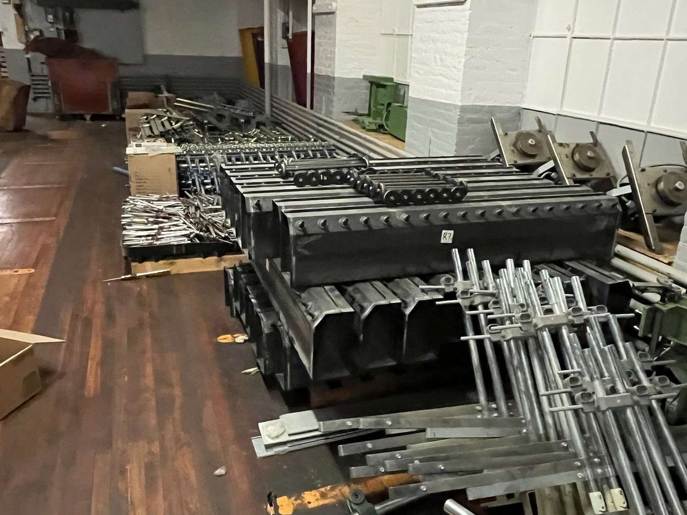
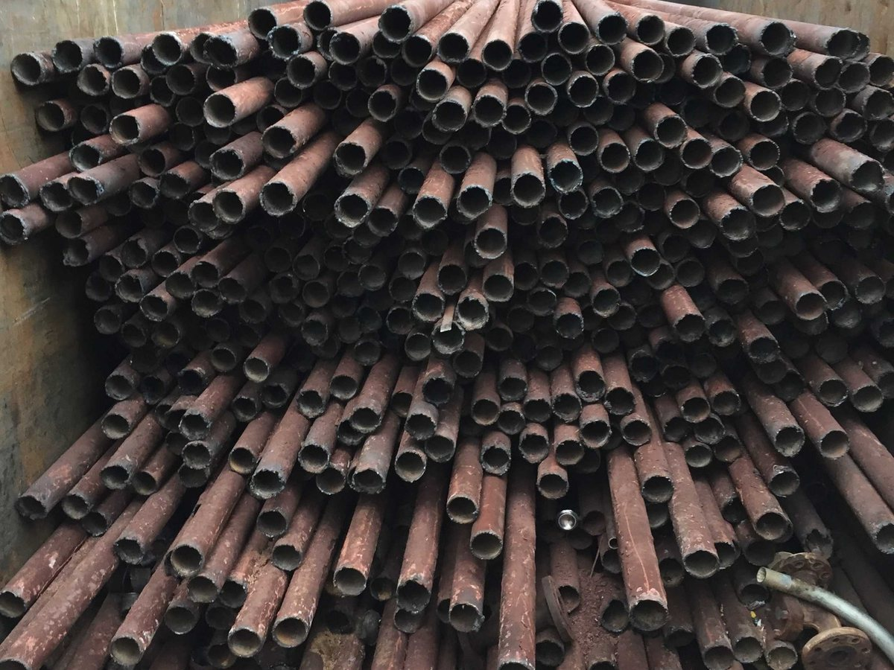
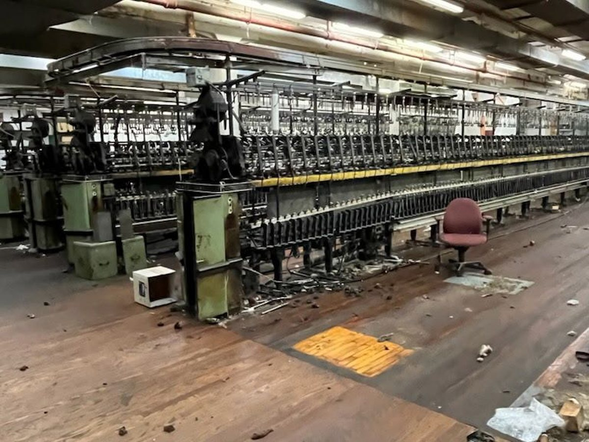

Commercial demolition specialists
Clear the way for what’s next.
KBS delivers controlled commercial demolition, industrial dismantling, equipment removal, and selective interior work with the planning, communication, and jobsite discipline your project demands.
Demolition with discipline
The partner contractors call when the work has to stay on schedule.
From boiler room tear-outs and machinery removal to selective interior demolition and facility decommissioning support, KBS approaches every scope with organized planning, experienced crews, and an unwavering focus on keeping the site controlled.
Why KBS →
Capabilities
Built around the real needs of active commercial and industrial projects.

Interior & Selective Demolition
Targeted removal for renovations, reconfigurations, and occupied commercial spaces.

Boiler & Mechanical Demolition
Controlled dismantling of boiler systems, mechanical equipment, and associated infrastructure.

Equipment & Process Line Removal
Removal of machinery, piping, and production equipment to clear the way for the next phase.

Proof in the work
A project gallery built to show real results.
Real KBS jobsite photos now anchor the site, helping prospects quickly see your experience with industrial equipment removal, boiler dismantling, and selective demolition.
Explore Projects →Let’s price your next scope